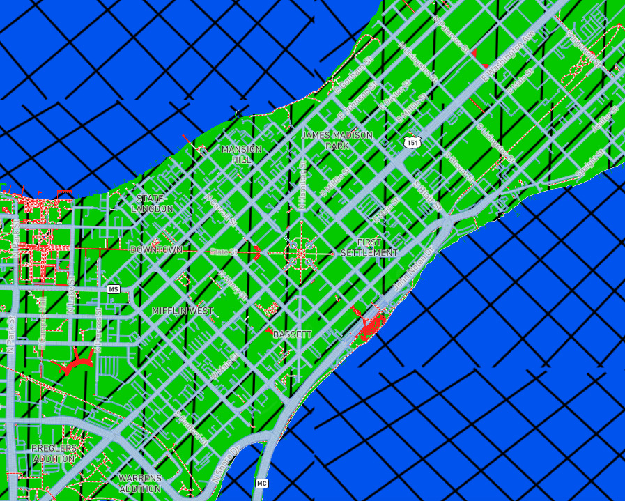
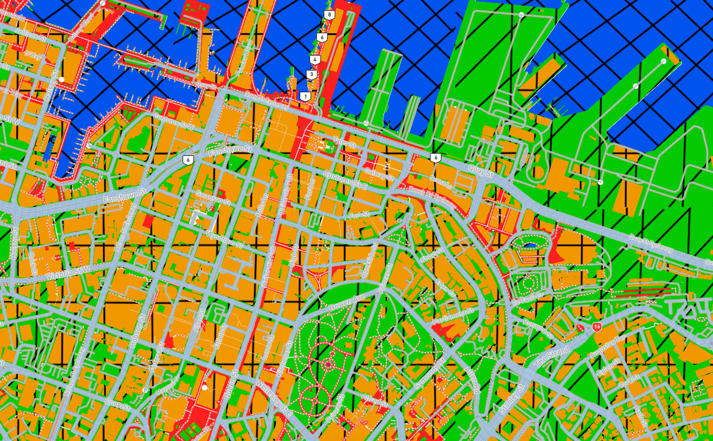
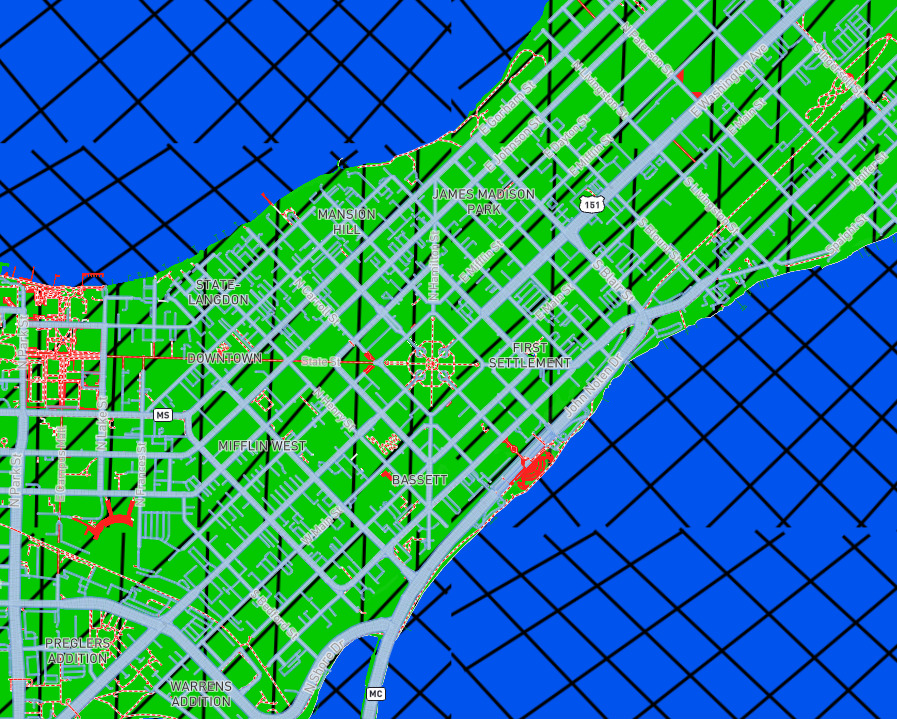
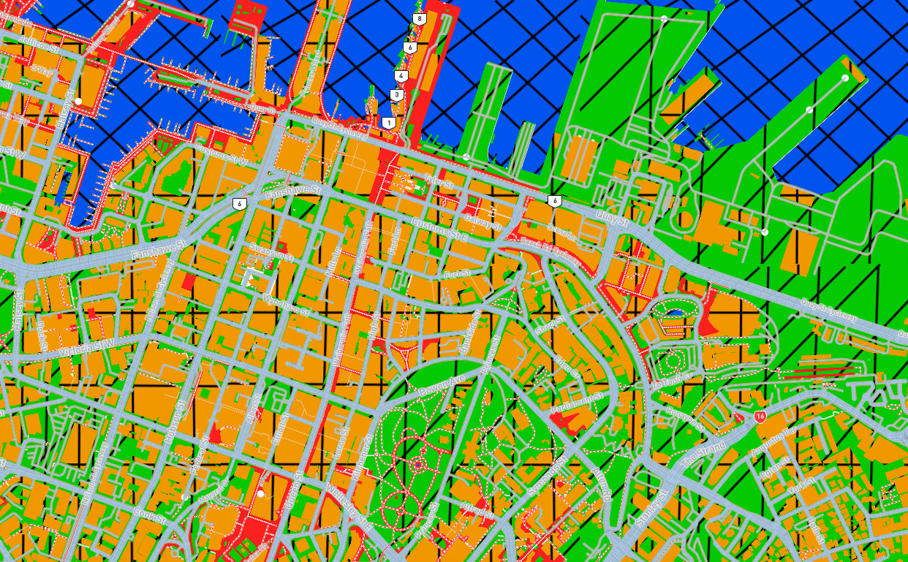

My Cubism Map
This map reimagines the world as modern art, where place becomes pattern suggesting both unity and chaos in spatial form. artificial color palettes with think blocky lines creating a glitchy texture.Embracing cubism’s hallmark of geometric deconstruction, the landscape is parsed with diagonal black hatching that crisscrosses the terrain like shattered glass overlaying familiar cartographic colors—lush greens for land, deep blues for water—invoking a fractured yet harmonious whole yet also echoing the distortion of a traditional perspective of the world.
Cubism is a revolutionary art style, focusing on geometry, abstraction, and multiple viewpoints. It was pioneered in the early 20th century by Pablo Picasso and Georges Braque. This map makes use of artificial color palettes with think blocky lines creating a glitchy texture. Roads and pathways intersect rigidly, reinforcing a structured yet almost game-like environment.This Cubsim-style map reinterprets an urban landscape through bold geometric abstraction, vibrant color contrasts, and a digital-constructed aesthetic. The city is fragmented into simplified planes of green (representing land), blue (water bodies), and gray (streets and infrastructure).
 



This is what Chicago, Illinois looks like with this Cubist lens and we can see that we have a zoomed out view of the Chicagoland area and we can see that there are many roads in Chicago and we can see there are artificial color and there are think blocky lines creating a glitchy texture to the map.
This is Cancun, MX reimagined through a Cubist lens, where its tropical landscape is abstracted and transformed into a dynamic, vibrant visual experience that turns the familiar into something strikingly new.
This Cubist-style map of this region of Europe reimagines countries with rigid geometric patterns and bold colors, transforming the familiar into an abstract composition. The sharp lines and structured forms reflect Cubism’s signature fusion of abstraction and geometry, breaking down the landscape into a fragmented yet cohesive visual experience.
This Cubsim map of Madison, WI presents a city with rigid geometry, bold colors making it a perfect example of Cubsim’s fusion of abstraction, geometry and we can see all of the city’s major features like the lakes, parks, and streets in a new light. The map captures the essence of Madison's urban landscape through a Cubist lens, where the familiar becomes abstract and the ordinary is transformed into a vibrant visual experience.
This Cubsim map of the harbor in Auckland, New Zealand through a Cubist lens, we can clearly see all of the different buildings while also seeing all of the walking paths and the roads that are in the area.
Credits:
Map created with Mapbox Studio
Data from openstreetmap